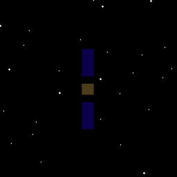
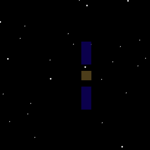

Demonstrates the image matching algorithm, FImage.
Compute the cost for one of four test cases.
Since version 10. ------------------------------------------------------------------------ See also QForm, QLVLH, QMult, QPose, QUnit, Mag, Unit, FindSolsticeOrEquinox, FImage, RVFromKepler, CameraDatabase, SpaceCamera ------------------------------------------------------------------------
Contents
%-------------------------------------------------------------------------- % Copyright (c) 1998-2003 Princeton Satellite Systems, Inc. % All rights reserved. %-------------------------------------------------------------------------- clear d; clear g; clear w;
Select test case (rx, ry, rz, qx)
%----------------- test = 'ry'; g = load('SCForImaging'); g.body(2).bHinge.angle = 0; g.body(2).bHinge.axis = 2; g.body(3).bHinge.angle = 0; g.body(3).bHinge.axis = 2;
Ephemeris - geosynchronous orbit
%---------- jD = FindSolsticeOrEquinox('spring equinox',2002); [rECI, vECI] = RVFromKepler( [42167 0 0 0 0 0], 0 ); uSun = SunV1(jD);
Camera
%------- d = struct; d.camera = CameraDatabase('256 square'); d.camera.up = [0;-1;0]; d.camera.focalLength = 0.1; d.camera.aperture = 0.1; d.camera.rho = 0.03;
Initialize the picture
%----------------------- qLVLH = QLVLH( rECI, vECI); g.body(1).bHinge.q = QPose(qLVLH); g.rECI = rECI; g.qLVLH = qLVLH; g.name = 'Satellite'; d.position = [];
Earth vector
%-------------
qLVLH = QLVLH( rECI, vECI );
uSunLVLH = QForm( qLVLH, uSun );
theta = atan2( uSunLVLH(1), uSunLVLH(3) );
CAD body structure
%-------------------
g.body(1).bHinge.q = QPose(qLVLH);
g.body(2).bHinge.angle = theta;
g.body(3).bHinge.angle = theta;
g.rECI = rECI;
g.qLVLH = qLVLH;
Draw the picture
%----------------- d.camera.rBody = 1.000002*g(1).rECI*1000; d.camera.distance = 0.000002*Mag(g(1).rECI)*1000; qBodyToECI = g(1).body(1).bHinge.q; d.camera.qBody = QPose( qBodyToECI ); tagVisibleCameraWindow = SpaceCamera( 'initialize', d, g, jD(1) ); SpaceCamera('update camera', tagVisibleCameraWindow, d.camera, jD ); SpaceCamera('update spacecraft', tagVisibleCameraWindow, g, jD );
Create the data structure
%-------------------------- w = struct; w.image = SpaceCamera( 'get frame', tagVisibleCameraWindow ); w.g = g; kTest = 1; switch test case 'ry' w.rECI0 = rECI + [0;.001;0]; % Example 1 w.q0 = g.body(1).bHinge.q; kTest = 5; case 'rz' w.rECI0 = rECI + [0.0;0;.001];% Example 2 w.q0 = g.body(1).bHinge.q; kTest = 6; case 'rx' w.rECI0 = rECI + [0.001;0;0]; % Example 3 w.q0 = g.body(1).bHinge.q; kTest = 4; case 'qx' w.rECI0 = rECI; % Example 4 dQ = QUnit([1;0.1;0;0]); w.q0 = QMult( g.body(1).bHinge.q, dQ ); end w.tag = SpaceCamera( 'initialize', d, g, jD ); w.jD = jD; % The state vector x is [dQ;rECI] %-------------------------------- x0 = [0;0;0;0;0;0]; x = x0; y = [-0.001 0 0.001]; cost = zeros(1,length(y)); for k = 1:length(y) x = x0; x(kTest) = y(k); cost(k) = FImage( x, w ); end %-------------------------------------- % PSS internal file version information %--------------------------------------